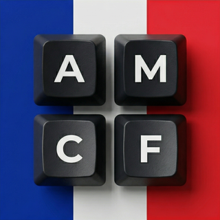

Le clavier du quotidien
L’AZERTY Windows reste l’outil majoritaire alors qu’il complique É, Ç, À, œ et les guillemets français.
Dossier presse, ressources visuelles, essai en ligne et contact média pour couvrir AZERTY Global.
AZERTY Global 2026 sort en version finale le 15 juin 2026. Cette version stabilise une disposition de clavier française gratuite et open source, compatible Windows, macOS et Linux, qui corrige l’AZERTY Windows sans nouveau matériel et avec 99 % des habitudes préservées.
AZERTY Global est une disposition de clavier gratuite et open source qui corrige les défauts historiques de l’AZERTY Windows. Vous pouvez enfin taper É, È, À, Ç directement avec Verrouillage Majuscule, utiliser les guillemets français « », et accéder aux symboles de programmation, dont { } et [ ] facilement. Le tout sans bouleverser vos habitudes : seulement 5 améliorations.
Les lettres restent à leur place : AZERTY Global corrige surtout les accès qui manquaient au clavier français.
Majuscules accentuées en un appui : É, È, Ç, À sans raccourci.
Le point et le point-virgule sont échangés, au profit du signe le plus utilisé.
Sur la touche en haut à gauche : @ pour les mails, # avec Maj.
Accès à { } \ | [ ] avec AltGr sur D F G H J K depuis la rangée de repos.
Accents aigu ´ et grave ` réunis pour saisir facilement plus de langues.
En janvier 2016, le Ministère de la Culture publie un rapport accablant : il est impossible de taper correctement en français sur un clavier AZERTY. Pas de majuscules accentuées natives, pas de guillemets français, pas d’œ ligaturé...
Suite à ce constat, l’AFNOR est mandatée pour créer une nouvelle norme. En 2019, la norme NF Z71-300 est publiée. Mais cette solution officielle impose une rupture trop brutale avec l’AZERTY Windows, ne répond que partiellement aux besoins des développeurs, et peine à s’imposer : très peu de claviers compatibles sont commercialisés et l’adoption reste marginale.
C’est dans ce contexte qu’Antoine OLIVIER, alors étudiant en classe préparatoire aux grandes écoles, décide de créer sa propre solution. Passionné par les claviers ergonomiques et les dispositions de clavier, il en avait assez des défauts de l’AZERTY traditionnel. Depuis, il continue à faire évoluer le projet.

L’objectif : une disposition basée sur l’AZERTY Windows — pour faciliter la transition — mais corrigeant ses défauts majeurs et ajoutant de nombreux caractères pour taper parfaitement en français et dans des dizaines d’autres langues. Depuis 2017, AZERTY Global a connu plusieurs versions. La version 2026 est de loin la plus aboutie, fruit de près de 10 ans de recherche et d’amélioration continue.
⚠️ À ne pas confondre avec l’AZERTY AFNOR
AZERTY Global est un projet indépendant, différent de la norme AFNOR (NF Z71-300 de 2019). Les deux dispositions partagent certains objectifs mais diffèrent dans leur approche. AZERTY Global privilégie une transition douce depuis l’AZERTY Windows traditionnel.
L’AMCF — Association pour la Modernisation du Clavier Français — est une association loi 1901 créée en mars 2026 et publiée au JOAFE le 7 avril 2026.

Pour un média, le clavier n’est pas un détail technique : c’est l’outil qui produit chaque titre, chaque citation et chaque article.
L’AZERTY Windows reste l’outil majoritaire alors qu’il complique É, Ç, À, œ et les guillemets français.
AZERTY Global corrige ces accès sans changer les lettres de place ni demander de nouveau matériel : 99 % des habitudes préservées.
Le projet est gratuit, open source, diffusé sous EUPL 1.2 et porté par l’AMCF, avec des versions Windows, macOS et Linux.
Un dossier complet pour préparer un article sur la version finale d’AZERTY Global.
Le ZIP officiel regroupe les documents, visuels et vidéos utiles pour couvrir la version finale d’AZERTY Global après 9 ans de développement.
Communiqué de presse et fiche projet, prêts à transmettre à une rédaction.
Logos AZERTY Global et AMCF, cartes clavier simplifiée et complète, capture de l’application.
Démonstrations courtes : typographie française, langues étrangères, programmation et usages quotidiens.
Fichiers LISEZ-MOI, noms de fichiers explicites et ressources prêtes pour intégration.
📝 Citation prête à l’emploi
« AZERTY Global améliore l’AZERTY français sans le réinventer : les habitudes restent, mais les majuscules accentuées, la typographie française et les caractères internationaux deviennent accessibles simplement. »